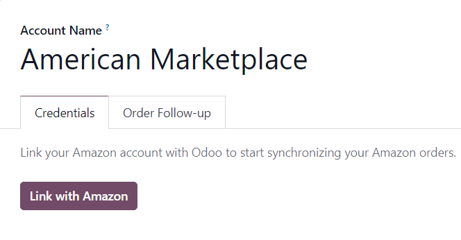

Configuración del conector de Amazon¶
Odoo permite que los usuarios registren una cuenta de vendedor de Amazon en la base de datos, pero el usuario debe tener una cuenta de vendedor de Amazon pagada antes de completar la cofiguración.
Para configurar una cuenta de vendedor de Amazon primero inicie sesión en la plataforma de Aamazon y vaya a desde el menú desplegable que se encuentra en el encabezado.
Después, en la página Vende con Amazon siga el proceso de registro y después siga las instrucciones a continuación para registrar y vincular su cuenta de vendedor de Amazon con Odoo.
Ver también
Contecte su cuenta de vendedor de Amazon con Odoo¶
Para conectar su cuenta de vendedor de Amazon con Odoo, vaya a la . Allí active la función Sincronización con Amazon y haga clic en Guardar.
Después, regrese a la y haga clic en el enlace Cuentas de Amazon en los ajustes de Sincronización con Amazon.

Hacer esto lo llevará a la página Cuentas de Amazon. Desde aquí, haga clic en Nuevo para crear y vicular una nueva cuenta de Amazon.
En el campo en Cuenta de Amazon de la página, primero elija el nombre de la cuenta (por ejemplo, Marketplace estadounidense). Después, en la pestaña Credenciales seleccione el marketplace en el que la cuenta de vendedor se creó desde el menú desplegable País del Marketplace.

Después de guardar, el campo en la pestaña Credenciales cambiará por un botón llamado Vincular con Amazon.
Al hacer clic en este botón se le redirigirá a la página de inicio de sesión de Amazon, o, si el usuario ya inició sesión en Amazon, a la página de consentimiento.
En la página de inicio de sesión, ingrese a la cuenta de vendedor de Amazon deseada.
En la página de consentimiento, confirme que Amazon puede permitir que Odoo tenga acceso a la cuenta y toda la información relacionada.
Al confirmarlo, Amazon redirigirá al usuario de vuelta a Odoo y la cuenta estará registrada.
Ya que haya logrado registrar la cuenta de Amazon, los marketplaces disponibles para esta cuenta en específico se sincronizarán con Odoo y se enlistarán en la pestaña Marketplaces.
Si lo desea, quite elementos de la lista de marketplaces sincronizados para deshabilitar la sincronización.
Órdenes de Amazon en Odoo¶
Al sincronizar una orden de Amazon, se crearán hasta tres líneas de artículos en la orden de venta de Odoo. Cada una representa un producto vendido en Amazon: una línea por el producto que se vendió en el marketplace de Amazon, una por los cargos de envío (si los hay) y una por la envoltura de regalo (si hay).
Para seleccionar un producto de la base de datos para un artículo de orden de ventas lo que se hace es vincular la Referencia interna (una referencia personalizable del producto dentro de Odoo, por ejemplo FURN001) con el SKU de Aamazon para artículos del marketplace, el código de envío de Amazon para cargos de envío y el código de envoltura de regalo de Amazon para los cambios de envoltura.
Para productos del marketplace, todo esto se guarda como Ofertas de Amazon, las cuales se enlistan en el botón inteligente de Ofertas del formulario del contacto.

Las ofertas se crean de forma automática si se establece una coincidencia, además de que se usan para órdenes subsecuentes para buscar SKU. Si no se encuentra ninguna oferta con un SKU que coincida, en su lugar se usará la referencia interna.
Truco
Es posible forzar la vinculación de un artículo del marketplace con un producto específico, solo se tiene que cambiar ya sea el producto o el SKU de una oferta para asegurarse que coincide. La oferta se puede crear de forma manual si todavía no se creó de forma automática.
Esto es útil si la referencia interna no se usa como el SKU, o si el producto se vende en condiciones diferentes.
Si no se encontró ningún producto de la base de datos con una referencia interna que coincida para un SKU o código de envoltura de Amazon, entonces se usará un producto de la base de datos predeterminado, Venta de Amazon, se usará. Lo mismo se hace con el producto predeterminado Envío de Amazon si no se encuentra un producto en la base de datos para un código de envío de Amazon.
Nota
Para modificar los productos predeterminados, active el modo de desarrollador y vaya a .
Configuración de impuestos de productos¶
Para permitir el reporte de impuestos de ventas de Amazon, los impuestos aplicados a los artículos de la orden de venta son los que se configuran en el producto, o se determinan por la posición fiscal.
Asegúrese de tener los impuestos correctos configurados en sus productos en Odoo, o hágalo por posiciones fiscales, para evitar discrepancias en los subtotales de la central de vendedores de Amazon y Odoo.
Nota
Como Amazon no siempre aplica los mismos impuestos que los configurados en Odoo, es posible que los totales de la orden difieran entre la central de vendedores de Amazon y Odoo por algunos centavos. Esas diferencias se pueden resolver con una cancelación al conciliar los pagos en Odoo.
Agregar un nuevo Marketplace¶
Todos los marketplaces son compatibles con el conector de Amazon. Para agregar un nuevo marketplace, siga los siguientes pasos:
Active el modo de desarrollador.
Vaya a .
Haga clic en Nuevo para crear un nuevo registro de marketplace.
Ingrese el ID del marketplace en el campo Identificador API y seleccione la región de Amazon correspondiente tal y como se describe en la documentación de Amazon sobre los ID y regiones del marketplace. Escriba la URL de la Seller Central como se especifica en la documentación de Amazon para las URL de la Seller Central.
Establezca el nombre del registro como
Amazon.<country code>para acceder con facilidad (por ejemplo,Amazon.se). Los campos identificador API, región y URL de Seller Central deben contener respectivamente los valores de Marketplace ID, la región de Amazon seleccionada y la URL de Seller Central de la documentación de Amazon.Una vez hecho esto, actualice la configuración de la cuenta de Amazon en .
Seleccione la cuenta en la que quiere usar el marketplace nuevo, para eso vaya a la pestaña Marketplaces y haga clic en actualizar los marketplaces disponibles; aparecerá una animación donde se confirmará que la operación se realizó con éxito. Los marketplaces nuevos se agregarán de forma automática a la lista de marketplaces sincronizados. Si un marketplace nuevo no se agrega a la lista, significa que o es incompatible o no está disponible para la cuenta del vendedor.